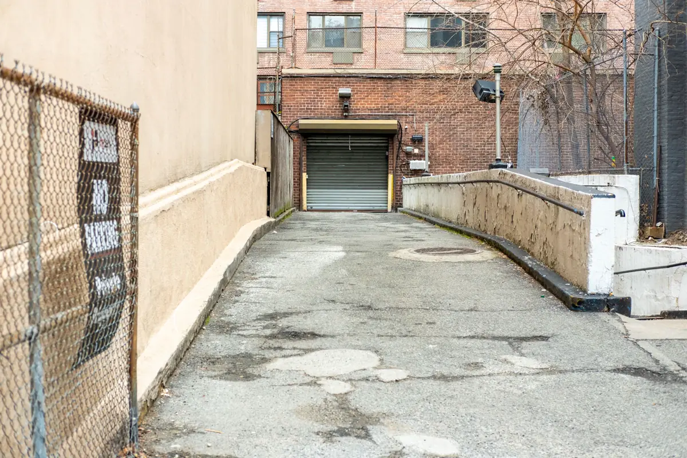
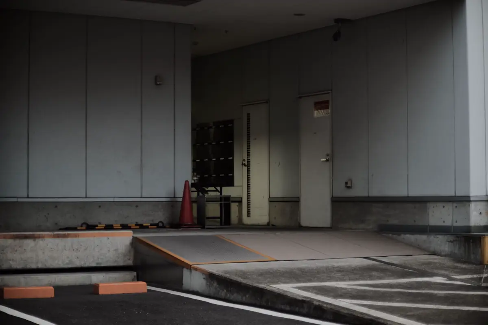
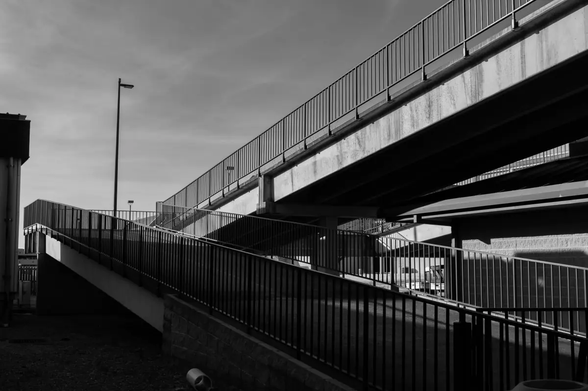

A rampa errada é o erro mais caro de acessibilidade
Rampa íngreme demais não serve para quem usa cadeira de rodas — e não passa em vistoria. Como é obra de concreto ou estrutura, refazer custa caro. A ABNT NBR 9050 (versão de 2020) fixa a inclinação máxima conforme o desnível de cada trecho, e é essa conta que define se a rampa cabe no espaço disponível. Para o laudo com ART, veja o laudo de acessibilidade NBR 9050.
Equipe técnica pronta para atender toda a demanda em Vitória, Vila Velha, Serra, Cariacica e região: o orçamento, o agendamento e o acompanhamento ficam centralizados na Axial Engenharia, do primeiro contato à entrega do documento.

Inclinação máxima por desnível
| Inclinação (i) | Proporção | Desnível máximo de cada segmento |
|---|---|---|
| até 5,00% | 1:20 | 1,50 m |
| acima de 5,00% até 6,25% | 1:16 | 1,00 m |
| acima de 6,25% até 8,33% | 1:12 | 0,80 m |
Em reforma, quando não houver como atender a tabela, a norma admite rampas mais íngremes apenas para desníveis pequenos: até 10% para vencer no máximo 0,20 m e até 12,5% para no máximo 0,075 m. Fora dessas situações, inclinação acima de 8,33% não é rampa acessível.
Como calcular o comprimento
A fórmula é i = h × 100 / c, em que i é a inclinação em %, h o desnível e c o comprimento da projeção horizontal. Isolando o comprimento: c = h × 100 / i.
Exemplo: vencer 0,60 m de desnível com 8,33% exige c = 0,60 × 100 / 8,33 ≈ 7,20 m de rampa, sem contar os patamares. Com 6,25%, o comprimento vai para 9,60 m. É por isso que, em lote estreito, a solução às vezes é plataforma elevatória — e o laudo compara as duas.

Largura, patamares e inclinação transversal
- Largura: mínima admissível de 1,20 m e recomendada de 1,50 m, livre entre corrimãos;
- Patamares: no início e no fim da rampa e nas mudanças de direção, com comprimento mínimo de 1,20 m;
- Inclinação transversal: até 2% em rampa interna e até 3% em rampa externa;
- Piso: firme, regular e antiderrapante, com piso tátil de alerta no início e no fim.

Corrimão e guia de balizamento
A rampa leva corrimão dos dois lados, em duas alturas — 0,70 m e 0,92 m do piso —, contínuo, prolongado 0,30 m nas extremidades e com acabamento recurvado. Onde não houver parede, entra a guia de balizamento com pelo menos 0,05 m de altura e o guarda-corpo. Em rampa externa na orla, o corrimão de aço comum enferruja rápido: inox ou aço galvanizado com pintura adequada, o mesmo cuidado da estrutura metálica na maresia.
Rampas são o ponto central em condomínios, igrejas e lojas com degrau na entrada; quando a rampa leva ao sanitário, confira também as medidas do banheiro acessível.
Perguntas frequentes sobre rampa de acessibilidade
Qual a inclinação máxima de uma rampa acessível?
Pela NBR 9050, até 8,33% (1:12) para segmentos que vencem até 0,80 m de desnível. Para desníveis maiores por segmento, a inclinação precisa ser menor: até 6,25% para 1,00 m e até 5% para 1,50 m.
Como calcular o comprimento de uma rampa?
Use c = h × 100 / i, em que h é o desnível e i a inclinação em %. Para vencer 0,60 m a 8,33%, são cerca de 7,20 m de rampa, sem contar patamares.
Qual a largura mínima de uma rampa?
A NBR 9050 admite largura mínima de 1,20 m e recomenda 1,50 m, medida livre entre os corrimãos.
Qual a altura do corrimão da rampa?
Duas alturas, 0,70 m e 0,92 m do piso, dos dois lados, prolongadas 0,30 m nas extremidades.
Rampa móvel atende a norma?
Raramente. Rampas móveis costumam ficar acima da inclinação permitida e sem corrimão. Em reforma com desnível muito pequeno, a norma admite inclinações maiores em trechos curtos — o laudo indica se é o caso.
Conferência de rampas na Grande Vitória
Laudo e conferência de rampas de acessibilidade em toda a região:
Vai construir ou já construiu a rampa?
Mande o desnível e o espaço disponível, ou fotos com trena. Retornamos com a conta e o valor do laudo.